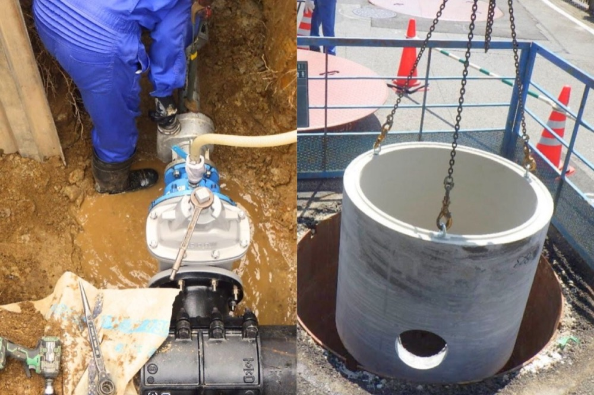
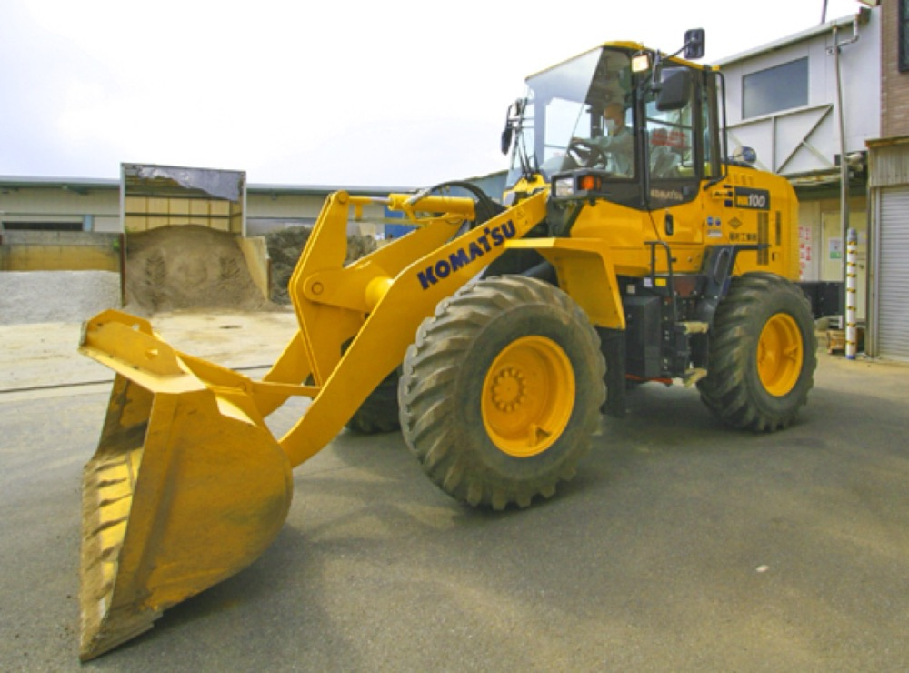
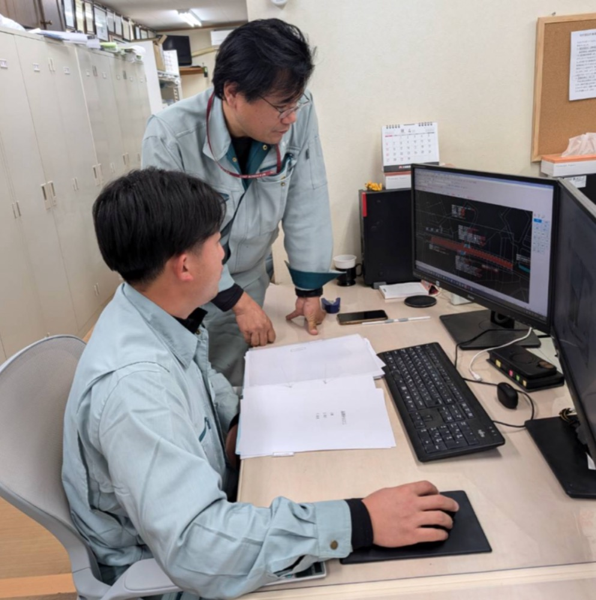
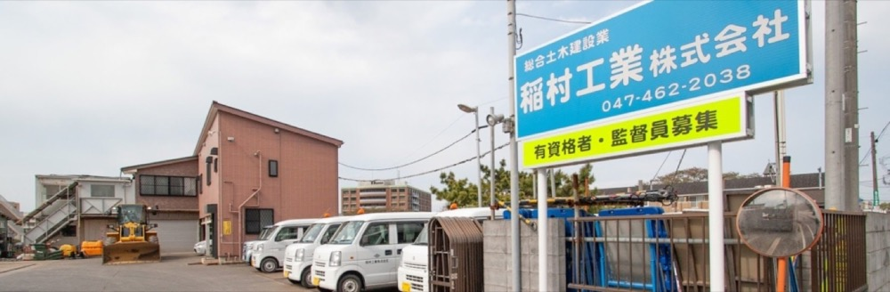

千葉県民の暮らしの根底を創る会社
速水 雅之Masayuki Hayami
稲村工業株式会社 代表取締役
1971年兵庫県西宮市生まれ。市川工業高校卒業後、1995年に稲村工業へ入社。現場監督として施工管理に従事し、2012年取締役就任。福利厚生改革など組織改善を進め、2024年に創業社長の後を受け代表取締役に就任。水道本管更新工事を中心に30年の実績を積み、社員と家族の満足度向上を経営方針に掲げる。現在も現場に立つ。
企業サイトを見るTRACK 01
千葉県民の暮らしの根底を創る会社

約10,000キロメートル。これは、千葉県内の地下に埋まっている水道管の総延長だ。アスファルトの下を、水道管が静かに軋みながら、今もなお横たわっている。東京の日本橋から市川市、船橋市を抜け、千葉県千葉市中央区まで至る、国道14号線。ヘッドライトがまだまばらな闇の中で、速水雅之は路面に立ち、耳を澄ませる。
速水率いる稲村工業株式会社は、行政と二人三脚でこの見えない血管を更新し、街の新陳代謝を支える、まさに小さな臓器だ。従業員はわずか12名。だが、この12の鼓動が止まれば、千葉県民の暮らしのリズムもたちまち狂ってしまう。
TRACK 02
福利厚生の真の目的

稲村工業は昭和51年の創業以来、千葉の地下で水が流れる道をつくり続けてきた。水道管の耐震化、水道本管の更新、下水道の改修…いずれも派手な看板を掲げる仕事ではない。しかし、たとえば震災で水が止まったとき、人々は初めてその名を探す。ライフラインとは文字どおり、人の生をつなぐ線であり、その継ぎ目を縫う手は、工場の旋盤よりも繊細で確かな感覚を要する。
兵庫県西宮で生まれ育った速水は、24歳で会社に入った。入社理由は、たまたまだという。結婚を機に「ちゃんと稼げる仕事」を探し、掴んだ縁。上司にも恵まれ30年以上、彼は現場に身を投じ続けた。
東日本大震災、液状化した浦安の街で、泥に膝まで埋まりながら、復旧工事に明け暮れた1ヶ月があった。バックホウの油の匂いとガス灯の明滅の中で、彼は「誰かに水を届けるために、自分は生きている」ことを骨に刻みつけた。 そして2024年春、代表取締役へ就任した。「働き方改革」も始まっていない平成の時代を知る男は、まず「社員を大事にする」ことに舵を切る。企業年金の導入、空気清浄機の設置、制服の刷新。細部は小さくても、そこに込める意図は大きい。「これらは、本人のためだけじゃないんです。彼らには、帰宅すると待っている家族がいます。家族の方にも 、 稲村工業と付き合って良かったと、心から思われたいので」


TRACK 03
稲村工業式組織論
稲村工業の強みはシンプル。千葉県企業局発注の水道本管工事で30年の実績を積み、高いリピート率を誇る、安定受注。その実績を可能にしているのは、約10名というミニマム編成に秘めた柔軟性だ。
速水は「完璧な監督」を求めない。2名、3名で現場を張り、それぞれの得意分野を細分化するのである。住民対応が巧みな者、どんな現場でも測量を任せられる者、PCで図面を操る者…それぞれの個性をパズルのように組み合わせ、プロジェクトを駆動させるのだ。
ICTも導入した。クラウド図面共有と遠隔カメラで、深夜の現場でもデータはリアルタイムに本社へ届く。だが最新機器より重要なのは、路面を叩くドリルのリズムを耳で覚えた職人の勘だ、と彼は笑う。技術と感覚…硬質な鋼管と、水面のさざ波のようなチームワーク。その対比こそ、この会社の詩学であり、そして積み上げてきた速水の仕事観でもある。